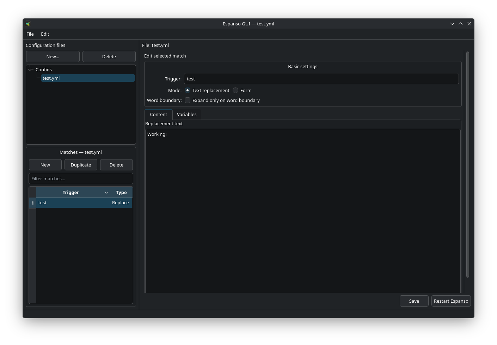

A native desktop editor for Espanso match files. Espanso GUI makes it easier to create, review, and maintain text-expansion rules without editing YAML by hand, while keeping your existing Espanso configuration in control.

Downloads
Choose the appropriate package for your operating system.
Pre-built binary packages for common Linux distributions:
Native disk images for Apple silicon and Intel Macs.
Portable archive for 64-bit Windows systems. Extract it and run Espanso GUI.exe.
Instructions for installing or running directly from source code.
Detects Debian, Ubuntu, Arch Linux, and compatible distributions.
curl -fsSL https://raw.githubusercontent.com/johannjdk/espanso-gui/main/scripts/install-linux.sh | shsudo dpkg -i espanso-gui-all.deb
sudo apt-get install -fsudo pacman -U espanso-gui-any.pkg.tar.zstRequires Python 3.10+ and PySide6
git clone https://github.com/johannjdk/espanso-gui.git
cd espanso-gui
python3 -m venv .venv
source .venv/bin/activate
pip install .
python3 -m espanso_gui